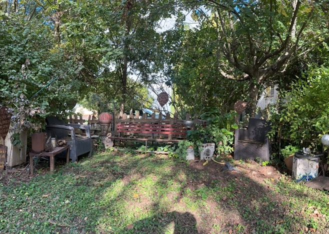
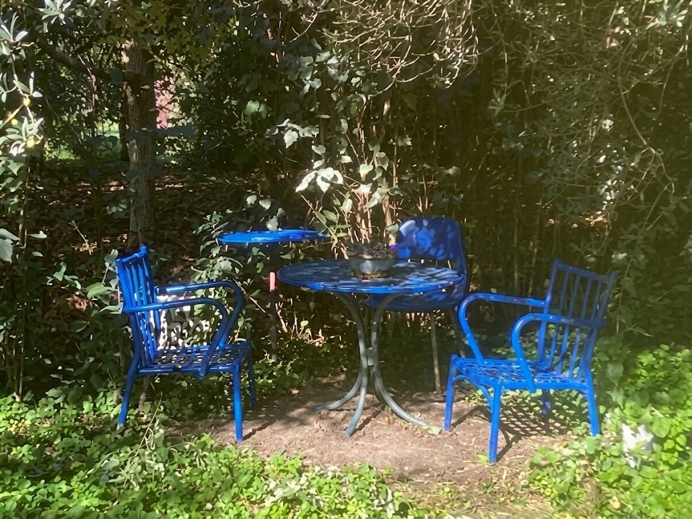
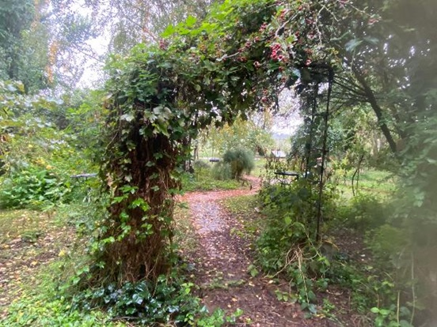

内側へと向かう散歩

自然と静けさと発見の小さな宇宙へようこそ。
あなたは、時間が違うリズムで流れてもよい場所にたどり着きました。ここでは急ぐ必要も、どこかにたどり着く必要も、何かを決まったやり方でする必要もありません。
お願いしたいことはただ一つ。いまここにいてください。
庭のあちこちに、語り合い、歩き、香りと遊び、水の音に耳を澄ませ、そしてもしかすると自分について何か新しいことを発見するよう誘うコーナーがあります。分かち合うためのひとときもあれば、静けさの中で味わうためのひとときもあります。
感覚に導かれるままに、それぞれの場所が自分なりのやり方で語りかけてくるのに任せてください。結果を求める必要はありません。正しい答えも間違った答えもありません。
道はここから始まります。その先は、あなた自身で見つけてください。
地図

庭の中心をめぐり、分かち合う体験から個人的な発見へと続く小道をたどって、庭の旅に出かけましょう。
四つのコーナー、自然と、そして自分自身とつながる四つの方法。
- コーナー1：言葉と思索のコーナー。
- コーナー2：水の小道。
- コーナー3：香りのゲーム。
- コーナー4：変容。
急がずにルートをたどってください。立ち止まり、呼吸し、眺め、驚きに身をゆだねて。
香りのアーチが、ある場所から次の場所へとあなたを運んでくれます。小道沿いには、座ったり、歌ったり、読んだり、思いをめぐらせたり、ただ眺めたりできるほかの場所もあります。
コーナー1 · 言葉と思索のコーナー

言葉や思いを分かち合い、考え、ほかの人の話に耳を傾ける。
シナノキの木陰で、庭は私たちに立ち止まり、出会うための場所を差し出してくれます。
言葉に満ちた日々、積み重なる考え、先延ばしにし続けている会話から来たのかもしれません。いま、座って、呼吸して、耳を傾ける機会があります。
あなたの周りには、思いをめぐらせるための短い文章があります。目を引いたものを一つ読んでみてください。言葉が心の中に落ち着くのを待ちましょう。
グループで来ているなら、読んで心に浮かんだことを分かち合ってもいいでしょう。答える必要なしに、ほかの人の話を聞くだけでもかまいません。本当に耳を傾けることは、ときに誰かに寄り添う美しい方法です。
結論にたどり着く必要はありません。一つの言葉、一つの考え、一つのまなざしが、私たちを少し近づけてくれれば十分です。
少し立ち止まって、自分に問いかけてみてください。
私は何を言う必要があるのだろう？ そして何を聞く必要があるのだろう？
シナノキの葉の間を通り抜けるそよ風のように、会話をゆっくりと流れさせましょう。
コーナー2 · 水の小道

五感すべてを楽しむ。歩き、体を感じ、庭を全身で受け取る。
ハシバミとナツメの木の下で、庭はあなたの前に開け、肩の力を抜くよう誘います。
足が地面に触れるのを、体が動くのを、重心が移るのを感じてください。呼吸に耳を傾け、それにペースを決めさせましょう。急ぐ必要も、たどり着くべき目的地もありません。いまここにいる喜びだけがあります。
終点に着いたら、しばらく座ってください。休んで庭を眺めるための場所があなたを待っています。滝が音楽を奏で、水が涼しさを届けてくれます。あたりを見回し、水の音と、そよ風になでられる葉の音に耳を澄ませてください。
そして、自分に問いかけてみましょう。
この散歩のあと、あなたの中で何が変わりましたか？
目を閉じて深く呼吸し、自分がこの瞬間の一部であると感じるだけで十分なのかもしれません。
コーナー3 · 香りのゲーム

嗅覚を目覚めさせ、遊び、庭の中で自然の魂を発見する。
目からも言葉からも届かない記憶があります。ときには、香り一つで私たちの中の何かが目を覚まします。
このコーナーでは、小さな発見のゲームがあなたを待っています。小瓶を一つ手に取り、ふたを開けて、香りをそっと近づけてください。息を吸い込みます。中にどんな植物が隠れているか当ててみてください。
この香りから何を思い浮かべますか？ なじみのある香りですか？ 何かの記憶がよみがえりますか？ 好奇心、落ち着き、喜び、あるいはうまく名づけられない気持ちを呼び起こしますか？
発見できたら、庭でその植物を探してみてください。葉、形、色、そしてどこに生えているかに目を向けてみましょう。
このゲームが、発見することは見ることを学ぶ方法でもあると思い出させてくれますように。小さく取るに足らないと思っていたものが、突然特別な発見になるかもしれません。
自分に問いかけてみてください。
身の回りにあるもののうち、まだ気づけるようになっていないものはいくつあるだろう？
発見をほかの人と分かち合い、驚きを楽しんでください。ここでは、驚きに身をゆだねることも道の一部です。
コーナー4 · 変容

立ち止まり、自分を見つめ、変化に心を開く。
自分の中の蝶を見つける
庭の最後のコーナーに着きました。この場所はあなただけのものです。
座る前に、地面にある文章の前で立ち止まってください。落ち着いて読み、その言葉を心にとどめてください。
イモムシと蝶は同じ生き物ですが、世界での在り方は同じではありません。ある日イモムシには不可能に思えたことも、蝶に変わると可能になります。
では私たちは？ まだ見つけていない羽に気づかないまま、自分をイモムシだと思っていることがどれほど多いでしょう。どれほどの力、強さ、美しさが、私たちの中で目覚めるときを待っているのでしょう。
鏡の前で
では、鏡の前に座ってください。裁くことなく、やさしいまなざしで自分を見つめてください。今日はどんな気分ですか？ 人生のこの時期の自分をどう見ていますか？ 自分の中で何を変え、何を大切にし、何を育てたいですか？
準備ができたら、庭でいちばん好きな一角が見つかるまで鏡を回してみてください。心地よくなれる眺めを探し、それがあなたの後ろに現れるのを見てください。
もう一度見てください。いま鏡の前にいるのはあなただけではありません。庭もそこにあります。木々、植物、光、大地……。すべてが絵の一部であり、あなたもそのもう一つの部分なのです。
自分の見方の中で、何が変わりましたか？
座る前は、自分ひとりきりだと感じていたかもしれません。いまは、自分がより大きな全体の一部であり、周りの命とつながっていると感じているかもしれません。
それを感じるために、少し時間をとってください。すぐに答えを出す必要はありません。発見の中には、静けさと時間と信頼を必要とするものもあります。
変わるということは、別の誰かになることではなく、すでに私たちの中に生きていて、まだ花開かせていないすべてを見つけることなのかもしれません。
立ち上がるとき、この問いを持っていってください。
あなたは何になりたいですか？ どんな羽を広げたいですか？
そして覚えておいてください。あなたがなりたいと夢見る蝶は、もうすでに、静かにあなたの中で休んでいるのかもしれません。
香りのアーチ

ルートの途中には、香りのよいつる植物に覆われたアーチがあります。それらは散歩全体をつなぐ見えない糸のようで、一つの体験と次の体験の間で、意識して呼吸するよう誘ってくれます。
このアーチをゆっくりくぐってください。頭を占めていることを少しの間後ろに置き、感覚を目覚めさせて新しい場所に入りましょう。
先へ進む前に、少し立ち止まってください。深く呼吸し、植物の香りが自分のペースで届くのを待ちましょう。
この香りはあなたの中に何を目覚めさせますか？ 記憶、感情、あるいはただ心地よい感覚かもしれません。答えを探す必要はありません。ただ感じてください。
香りを言い当てたり、意味を見つけたりする必要はありません。ただ気づいてください。
こうしてアーチは体験と体験の間の小さな休止となり、散歩の瞑想的な雰囲気を深めてくれます。
そのほかのコーナー
道すがら、四つのコーナーを見つけ、香りであなたに寄り添った香りのアーチをくぐってきました。でも庭にはまだ小さな宝物があります。小道の間に、立ち止まり、座り、休み、読み、歌い、あるいはただ時が過ぎるのに任せられるほかの場所が見つかるでしょう。
眺め、耳を澄ませ、呼吸する以外に何もすることはないと気づくかもしれません……この小さな宇宙の一部、木々や植物や水、ここで脈打つ命の間のもう一つの要素だと感じられるまで。
なぜなら、あなたはただ庭を歩く人ではなく、あなたもまたその一部だからです。
歩くことは、ときに自分に帰る方法でもあります。答えを見つける必要はありません。呼吸して、いまこの瞬間、自分がここにいると感じるだけで十分なのかもしれません。
この道には、まだたくさんの驚きが待っています。